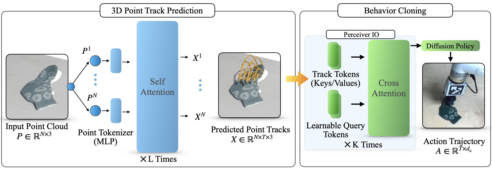
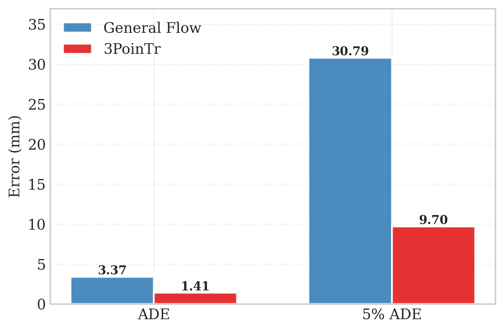
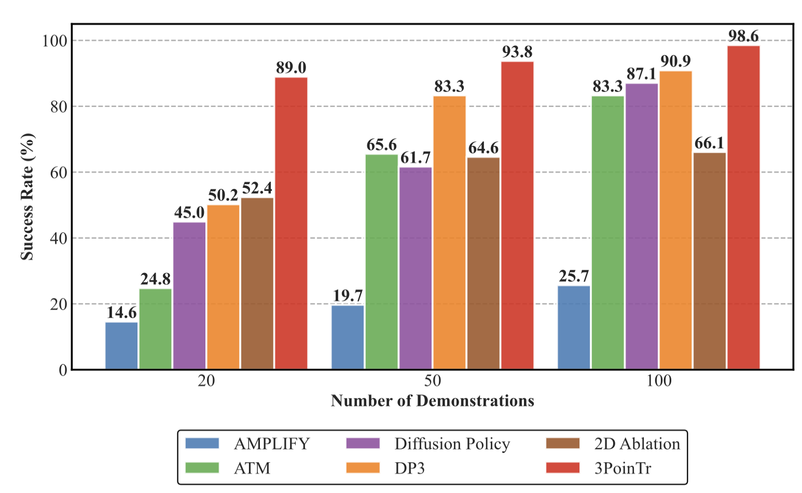
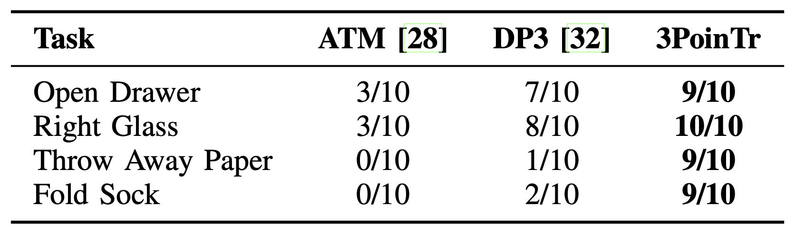

-
3PoinTr is a general and scalable method for pretraining manipulation policies with casual human videos. Given an observed point cloud, 3PoinTr answers: how will the scene evolve when completing the task? We contribute a state-of-the-art 3D point track prediction transformer, and use a Perceiver IO architecture and Diffusion Policy to enable state-of-the-art imitation learning.
Abstract
Model Architecture
Diagram of the 3PoinTr network architecture. We first encode an initial point cloud, pass through a transformer decoder, and project each point token to a 3D point trajectory. This yields dense 3D point tracks that encode goal specifications, scene geometry, and spatiotemporal relationships. We then aggregate the per-point trajectory features using a Perceiver IO-style cross-attention module. A small set of learned query tokens attends to the full set of point track tokens, producing a compact global representation of the task. This representation is used as conditioning input to a Diffusion Policy, which generates an open-loop sequence of robot actions.
Results: 3D Point Track Prediction
Average Distance Error (ADE) and ADE of the 5% of points that move the most (5% ADE) for 3PoinTr and General Flow on simulation and real-world tasks (in millimeters). 3PoinTr outperforms General Flow in both metrics on every task in our experiments. Across all tasks, 3PoinTr achieves average error reductions of 49.1% and 61.8% compared to General Flow.
Results: Sample-Efficient Policy Learning
Simulation Tasks
Simulation task success rate vs. number of robot demonstrations. Results are averaged across the three simulation tasks. 3PoinTr achieves the highest average success rate across all tasks and numbers of demonstrations.
Real-World Tasks
Real-world success rates evaluated over 10 rollouts.
Rollouts
Input Point Cloud
3D Point Track Prediction
Example Policy Rollouts